ברוכים הבאים לשביל אל חיים טובים יותר
שמחה שאתם פה!
זוהי הזמנה לצאת למסע של גילוי והתפתחות עם האוצרות הנמצאים בידכם.
ריכזתי רבים מהם ב־66 קלפים מלאי תוכן, משמעות והשראה.
מאחלת מסע מרתק ומצמיח,רונית ליין
הזמנה למסע של גילוי והתפתחות
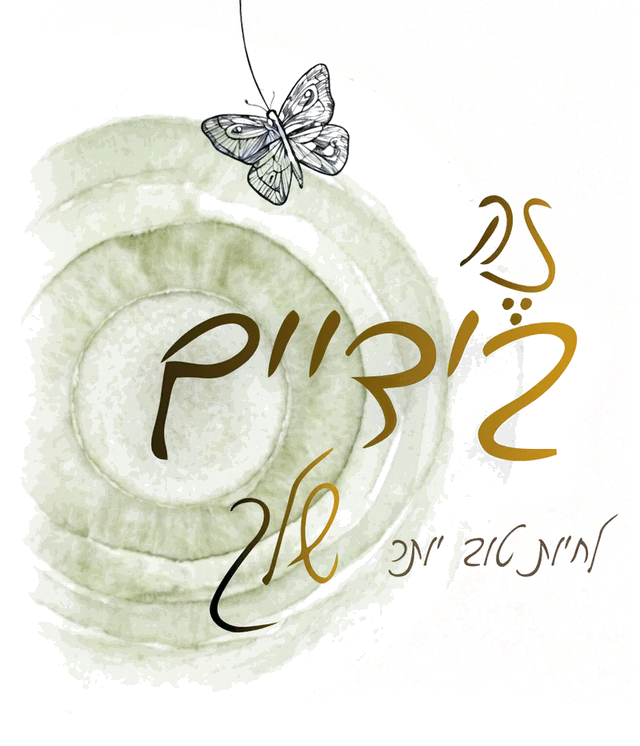
קלפי השראה למסע אישי, זוגי, משפחתי או קבוצתי
66 פרקטיקות פשוטות ויומיומיות לחיים טובים יותר. בצדו האחד של כל קלף פרקטיקה, ובצדו השני הרחבה ושאלות להעמקה ולהנעה לפעולה.
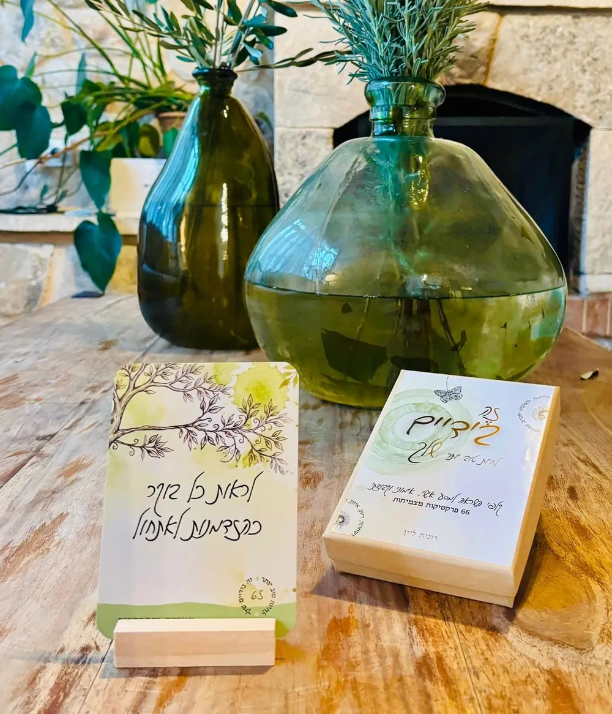
שמחה שאתם פה!
זוהי הזמנה לצאת למסע של גילוי והתפתחות עם האוצרות הנמצאים בידכם.
ריכזתי רבים מהם ב־66 קלפים מלאי תוכן, משמעות והשראה.
מאחלת מסע מרתק ומצמיח,רונית ליין
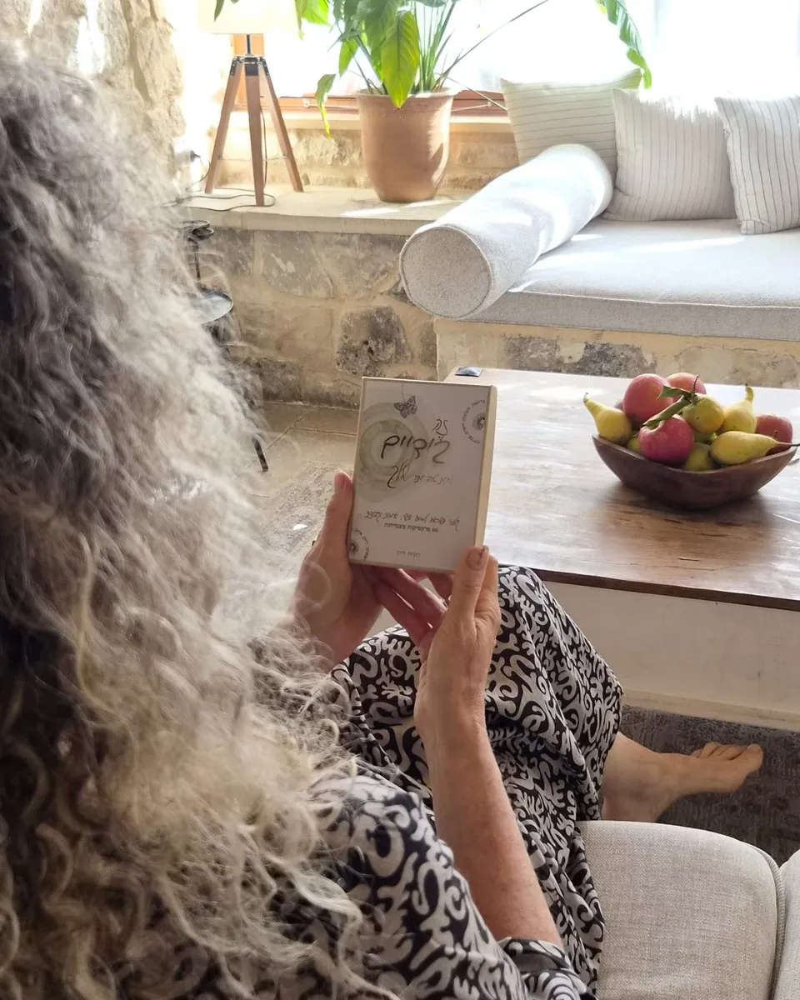

הרעיון שמאחורי הקלפים
מי לא רוצה לחיות טוב יותר? לחוות רגשות חיוביים ולהיות שבע רצון מעצמו ומחייו?
כולנו שואפים להיות כמה שיותר שמחים, מרוצים ובריאים בגוף ובנפש, למצוא איזונים ולדייק את עצמנו, להרגיש משוחררים וקלילים, ליהנות ממערכות יחסים תומכות ומזינות ולהמשיך לצמוח, להתפתח ולהגיע להישגים.
לעיתים קרובות אנו חווים פער בין שאיפות אלו לבין מציאות חיינו, והתחושה היא שכל כך הרבה פשוט לא תלוי בנו.
ערכת הקלפים ״לחיות טוב יותר – זה בידיים שלך״ מבוססת על גישה לחיים לפיה
הבחירות היומיומיות שלנו הן שקובעות את איכות חיינו, יותר מאשר נסיבות אובייקטיביות.
המציאות לרוב נתונה, אך אנו יכולים לבחור איך לתפוס ולפרש את המציאות, איך להגיב לה ואיך לפעול בתוכה למרות הנסיבות. זה בידיים שלנו!
מה בערכה
הקלפים מחולקים לשישה שערים:
כל שער כולל 11 קלפים המעוצבים בצבע ובאיור שונה וייחודי לאותו שער.
מבנה הערכה
בצידו האחד של כל קלף מוצגת פרקטיקה לחיים טובים יותר ובצידו השני פירוט והרחבה על מהותה ושאלות להעמקת מודעות, לחקירה פנימית ולהנעה לפעולה.
בתמונה: קלף 54, ״להיענות לאחרים ללא ריצוי״, מהשער מערכות יחסים
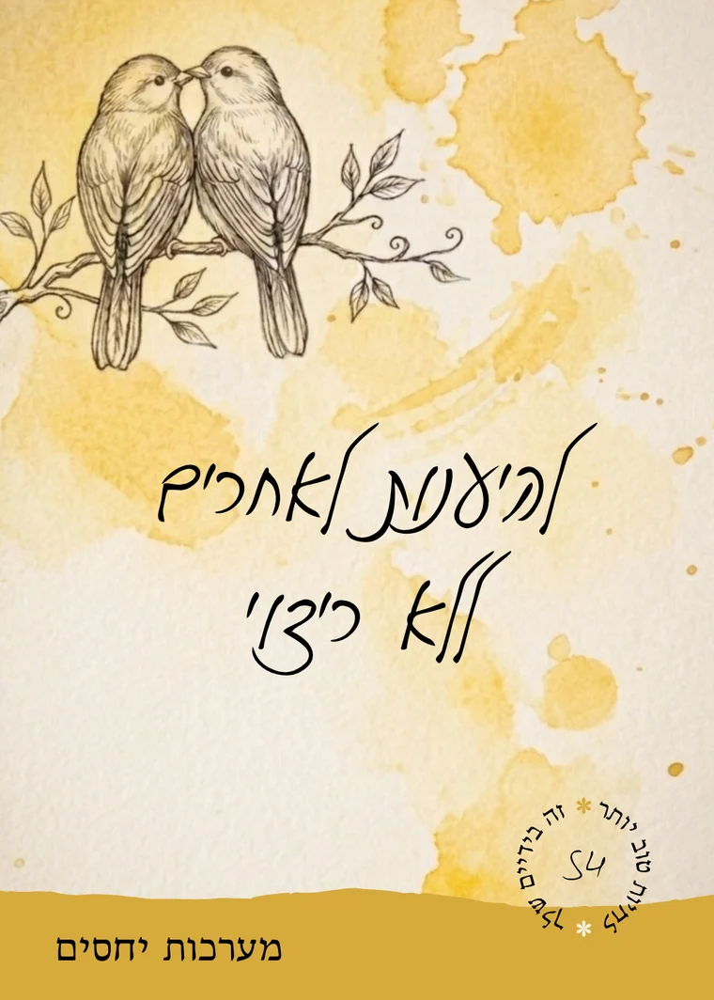
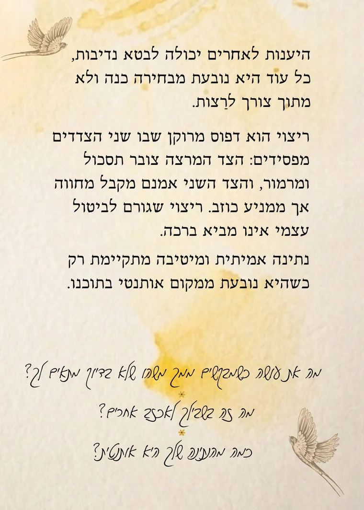
הצד האחד· פרקטיקה
הצד השני· הרחבה ושאלות
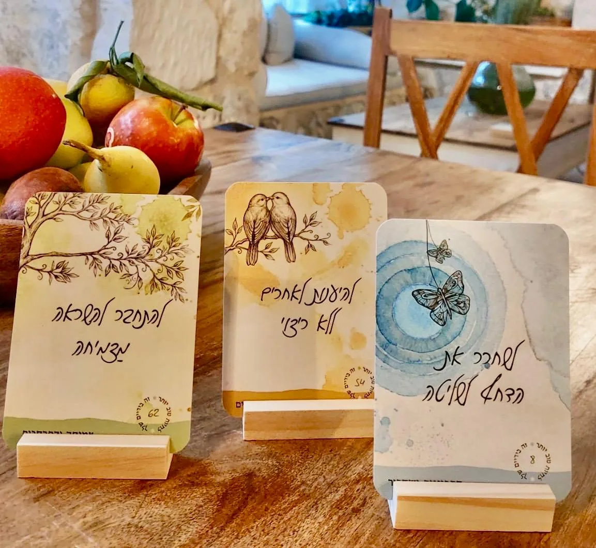
לערכת הקלפים מצורף סטנד מעץ להעמדת קלף – לתזכורת והשראה בהישג עין ולשדרוג כל פינה בבית, בסטודיו או במשרד.
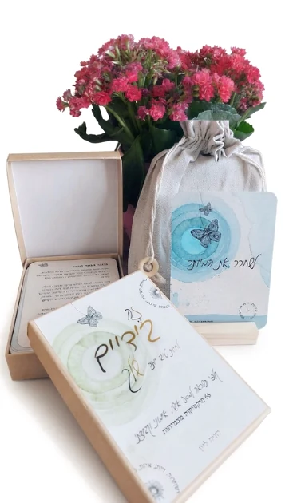
הערכה מגיעה בקופסא קשיחה וזו ארוזה בתוך שקית בד כותנה, כך שניתן לבחור האם לאחסן או לקחת את הקלפים בקופסא או בשקית בד בהתאם לצורך והנוחות.
טעימה מהערכה
לפעמים קלף אחד פותח כיוון חדש. שלפו קלף, התבוננו בפרקטיקה – ואז הפכו אותו כדי לקרוא את ההרחבה ואת השאלות.
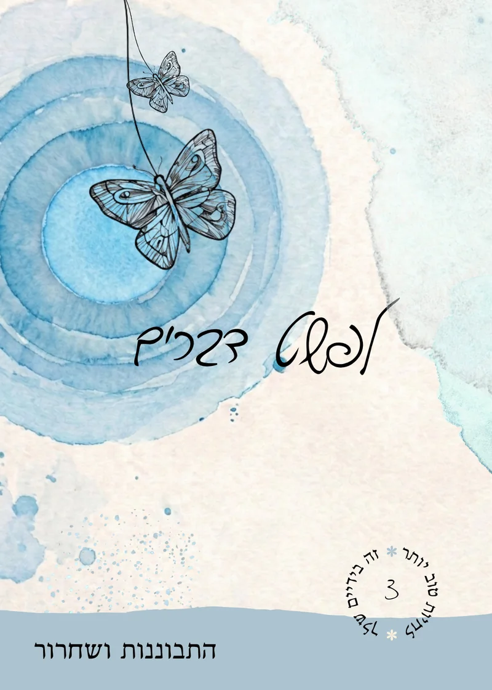
טעימה מתוך הערכה
שישה קלפים לדוגמה, אחד מכל שער – בדיוק כפי שהם מודפסים בערכה: בצד אחד הפרקטיקה, ובצד השני הרחבה ושלוש שאלות לחקירה ולהנעה לפעולה.
להזמנת הערכה בוואטסאפלעבודה עצמית ועם אחרים
ערכת הקלפים יכולה לשמש למגוון רחב של אפשרויות והקשרים – אישי, זוגי, משפחתי, קבוצתי.
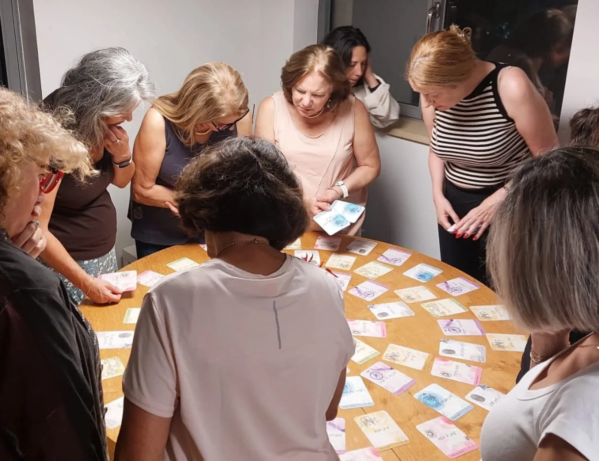
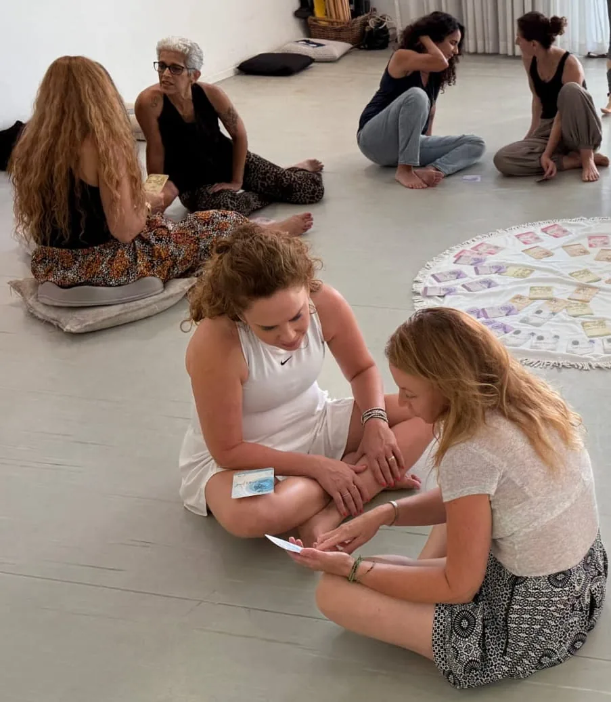
היא מתאימה לעבודה עצמית, לכל מי שמעוניין להיטיב עם עצמו, לשפר את איכות חייו ולצעוד במסע אישי של התפתחות וצמיחה באמצעות העמקת המודעות העצמית, הפניית תשומת הלב להיבטים שונים בחיי היומיום והיכרות עם כלים נגישים ופשוטים ליישום.
הקלפים שימושיים ומתאימים לעבודה אימונית, טיפולית או דיאדית אחרת, בין בני זוג, אחיות או חברות תוך שהם מסייעים להמליל ולפתוח גם סוגיות רגישות ומורכבות עם הזמנה לכיווני חשיבה ופעולה חדשים.
מניסיוני האישי ומעדויות של מנחות שמשתמשות בקלפים בסדנאות וריטריטים, הקלפים פועלים כמו קסם מהיר בתוך קבוצות, עם או בלי היכרות מוקדמת בין המשתתפים. הם יוצרים שיח עמוק ואותנטי ומאפשרים דיאלוגים מקרבים מיוחדים.
גם במפגש משפחתי, בין חברים או עם צוותי עבודה, הקלפים מתאימים ומועילים.
בואו נכיר
נעים להכיר, אני רונית ליין, מנחה ומלווה אנשים בהתפתחות אישית ומקצועית מזה עשרות שנים, ליתר דיוק עוד מהמאה הקודמת, משנת 1998, כמאמנת אישית, מנחת סדנאות, מכשירה מאמנים לחיים, מובילה ריטריטים בארץ ובעולם וב־14 השנים האחרונות גם מורה לתנועה בשיטת ניה הכייפית.
בשבילי התפתחות מתמדת היא ערך עליון.
מודעות עצמית, אותנטיות ודיוק הם כלים מרכזיים בחיי ובמימוש מאוויים שלי ושל אחרים, זו שליחות שמלאה בתשוקה לדבר.
אני מאמינה בכל מאודי כי לכל אדם מגיע לחיות חיים טובים, מלאים ומספקים וכי איכות חיינו נקבעת בעיקר על פי הדרך שבה אנו תופסים את המציאות ובוחרים לפעול בתוכה, על אף נסיבות ואילוצים שלא בשליטתנו.
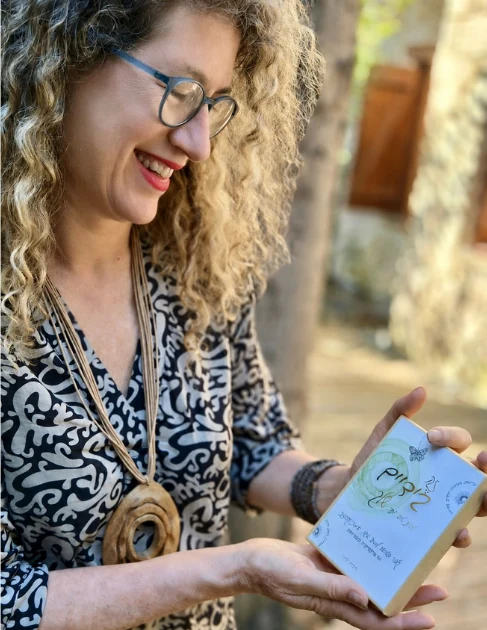
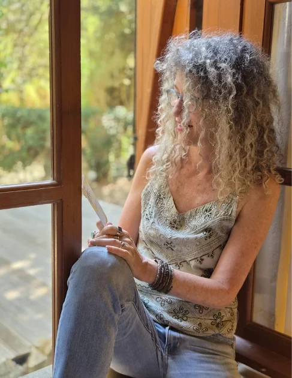
אל יצירת הקלפים נקלעתי די במקרה, בחורף 2026, כשביקשתי לעצמי הפוגה חורפית מעיסוק בריטריטים. התחלתי לכתוב להנאתי והמילים פשוט זרמו מעצמן בפרץ בלתי נפסק שנמשך כחמישה חודשים. הקדשתי לילות כימים לתהליך הכתיבה הקפדני והדיוק עד שיכולתי להיות שלמה ומרוצה מכל מילה ומילה. את העיצוב הוויזואלי של הקלפים יצרתי ביחד עם חברה מוכשרת ומסורה מאין כמוה – יוכי נדבצקי, כותבת תוכן מדהימה בעצמה.
בערכת הקלפים זיקקתי ידע וניסיון אישי ומקצועי רב שנים, במטרה לתת כלים יישומיים ולעורר השראה מצמיחה לכל מי שמעוניין להיטיב עם עצמו, לצמוח ולמקסם את הפוטנציאל הטמון בו ובחייו וכמובן עבור אנשי מקצוע – מטפלים, מאמנים, מנחי קבוצות ועוד.
המלצות
רציתי לשתף אותך שאתמול עבדנו עם הקלפים, אחיות שלי ואני וזה היה כל כך מדהים, כל כך עוצמתי. דיברנו על דברים שלא אמרנו אותם בקול או למישהו אף פעם. כל אחת ניסתה להבין דרך הקלפים ממה הדברים נובעים, ממש עמוק בפנים. התחייבנו לשנות, לראות אחרת ולעשות תהליך. הקלפים כל כך מדוייקים, כל כך מקצועיים, מעשירים, מכוונים שזה היה ממש טיפול אישי וקבוצתי.
תודה על הכל
אני עובדת עם הקלפים שלך המון, הם מדהימים ומדברים את השפה הטיפולית שלי בדיוק. כל קלף מבטא יפה את המסרים שאני מדברת תמיד עם מטופלי. כאילו קראת את מחשבותי, כאילו אני יצרתי את הקלפים הללו.
אני חייבת לומר לך שהקלפים שלך הם פשוט ווואוו,
היתה לי התלבטות אם לקנות אותם ואני כל כך מרוצה שקניתי, עברתי על כל הקלפים - הניסוח, הכותרות הכל, רואים שיש כאן עבודה עמוקה מאוד עם המון המון מחשבה.
זה מדהים ברמות. כבר השתמשתי עם מתאמנות וזה עושה עבודה כל כך טובה ומקדמת. אני מתפעלת ברמות. בשבוע הבא יש לי סדנא ואני לגמרי בונה אותה על הקלפים כי זה ווואוו. אני ממש מתלהבת ומתרגשת. קניתי לא מזמן קלפים אחרים אבל בניסוח שלך יש כל כך הרבה יותר ופתוח לפרשנויות וזה מדהים
יישר כוח גדול!
היי רונית, אנחנו במפגש משפחתי ופתחתי את הערכה שלך.
מדהים, מרגש!
מעודד שיח כייפי
תודה!!!
הקלפים נהדרים!
עברתי עליהם בעיון והמסקנה היתה שעלי לפנות עוד זמן וללמוד אותם יותר לעומק.
הם באמת יצירת מופת.
מעבר להיקף של התוכן, גם הניסוח, הידידותיות למשתמש, העיצוב המותאם בדיוק....
נכס אמיתי!
רוצים לחוות את זה בעצמכם?
להזמנת הערכה בוואטסאפאיך משתמשים
תשעה רעיונות לדוגמה – לעבודה עצמית, לשיחה ולעבודה בקבוצה.
ניתן לשלוף קלף אקראית, להתבונן בכותרת ולחשוב מה העיקרון הזה מעורר או מבקש להזכיר? למה דווקא הוא הוגרל בעיתוי הזה? לאחר מכן לקרוא את ההרחבה שבצד השני ולהעמיק בחקירה פנימית בעזרת השאלות.
ניתן לבחור קלף במודע, קלף שמבטא חוזקה או דווקא מקום שדורש התייחסות ושיפור. ניתן להעמיק את המודעות לגבי אותו נושא, לבחון אותו בעזרת הפירוט שעל הקלף, להרחיב את כיווני החשיבה והפעולה לגביו ולהתחיל לתרגל את היישום בחיי היומיום.
ניתן לעבוד כרונולוגית על פי סדר הקלפים (הם ממוספרים), להתמקד כל יום או כל שבוע על חיזוק הפרקטיקה שמוצגת בכל קלף.
אפשר להתמקד רק בקלפיו של שער אחד. אם רוצים לחזק תחום אחד ספציפי בזמן נתון, למשל במערכות יחסים או בבריאות הגוף והנפש, לסדר את קלפי אותו שער לנגד העיניים, ולמיין במה אני חזק/ה ומה כדאי לי לשפר, לקרוא ולדייק לעצמי איך לעבוד על השיפור.
אפשר להשתמש בקלפים להגדרת מטרות אישיות, מקצועיות, קבוצתיות ועוד.
הקלפים יכולים לסייע גם בסיכום של תהליך או תקופה – לבחון מה השתנה ומה התפתח. במקרה כזה, אפשר לבקש לבחור קלף שמייצג את נקודת המוצא, קלף שמתאר את נקודת המפנה וקלף שמשקף את התוצאה כרגע.
הקלפים משמשים לפיתוח שיחה מעמיקה, אמיתית ואפילו מפתיעה, בין בני זוג, עם הילדים, בין אחים ואחיות, בין קולגות, בתוך צוותי עבודה, בסדנאות, בין אנשים שכבר מכירים ובין אנשים שנפגשים לראשונה. ההנחיה יכולה להיות לבחור קלף שמאוד מייצג אותי או נוגע במשהו שמעסיק אותי לאחרונה.
בעבודה טיפולית-אימונית, ניתן להשתמש בצד של כותרות הקלפים בלבד ולשמור את הצד השני – ההרחבה והשאלות – לעיני המטפל-המאמן.
הקלפים יכולים להוות השראה יומיומית ולתת רעיונות במה להתמקד, איך לפעול ולהיטיב עם עצמנו ועם סביבתנו.
רוצים להתייעץ איך לשלב את הקלפים בבית, בעבודה או בקבוצה?
להתייעצות בוואטסאפלצוותים, לקבוצות ולחגיגות
ניתן להזמין סדנאות להיכרות והתנסות בקלפים לצוותים וקבוצות, לפעילות גיבוש, היערכות לפתיחת שנה או לסיכום שנה, לשיפור אווירה או כצ׳ופר.
אפשר להזמין סדנת קלפים לציון יום הולדת או לערב חברתי.
סדנאות לקהל הרחב מתקיימות מדי פעם וכדאי להתעדכן בהן.
להתייעצות ופרטים נוספים
לפרטים על סדנה בוואטסאפ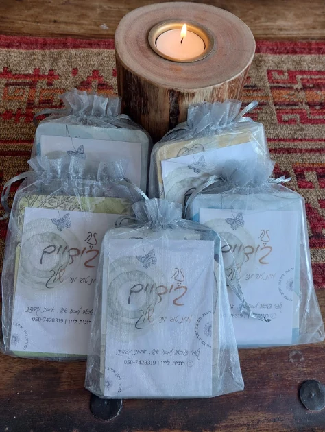
להמשיך את המסע
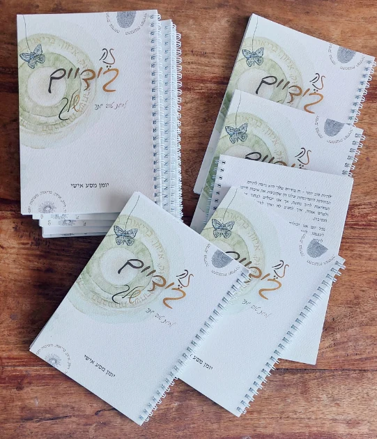
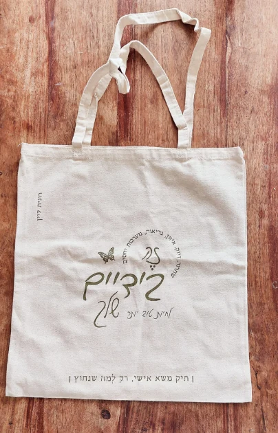
הזמנה
הערכה המלאה
250 ₪במקום 266 ₪
חבילת קלפים של שער אחד11 קלפים מתוך הערכה
66 ₪
להזמנהמחברת לתיעוד המסע האישי
35 ₪
להזמנהתיק משא אישי
45 ₪
להזמנהמחברת + תיק
75 ₪
להזמנהערכה מלאה + מחברת
275 ₪
להזמנהאיסוף עצמיניתן לאיסוף מירושלים ללא תשלום.
משלוחדמי משלוח בדואר ישראל כ־25 ₪, בתיאום.
תשלוםניתן לשלם בביט או בפייבוקס. פרטי ההזמנה, המשלוח והתשלום יתואמו בשיחה עם רונית.
הקלפים מתאימים מאוד לתהליך התפתחות אישי וישרתו אותך בלי קשר לתחום המקצועי שלך מאחר והם עוסקים במודעות עצמית ובכלים לעשות בחירות מיטיבות בחייך. תוכלי להשתמש בהם גם במפגשים חברתיים או משפחתיים.
הקלפים מתאימים ואפשריים לשימוש עם כל אחד. לעיתים עדיף להתחיל בשליפה אקראית של קלף על פני בחירת קלף מודעת כדי להקליל את הסיטואציה וליצור הבשלה מצד אנשים סקפטיים או שאינם מורגלים לפעילות מעין זו.
כל עוד שום דבר לא נפגע באריזה ולא נפתחה שקית הקלפים, ניתן להחזירה ולקבל החזר מלא.
בשונה מקלפים השלכתיים המבוססים בעיקר על ויזואליות (איורים, תמונות, סמלים, מילים או משפט בודד) שדורשים מהמשתמש לתת פרשנות מתוך עולמו הפנימי, ערכה זו מציעה פרקטיקות וכלים לאיכות חיים באמצעות טקסטים מדויקים ומזוקקים (מבלי לוותר על איורים מרהיבים). גם הטקסטים הללו מזמינים לחשיבה ויכולים לעורר תגובות מגוונות אך הבסיס שלהם כבר מפורש. בנוסף כל קלף כולל גם 3 שאלות פתוחות לחקירת הרעיון ולהנעה לפעולה.
זו ערכה שמדברת בגובה העיניים ומעניקה כלים קונקרטיים לעבודה עצמית, בלי לנחש ״למה הכוונה״.
יש לכם שאלה נוספת? אשמח לענות.
לשאלה בוואטסאפ